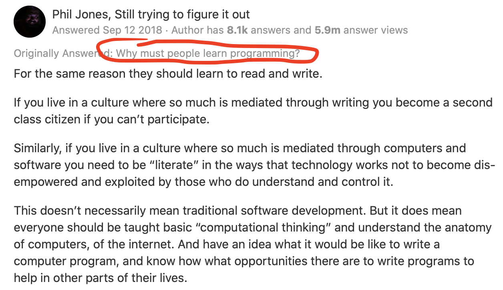

TIPN
Krzysztof Basiński
O mnie
- k.basinski@gumed.edu.pl
- Krzysztof Basiński
- Zakład Badań nad Jakością Życia
- Tuwima 15, pok. 312
O tym przedmiocie
- 10 spotkań po 3 godziny = 30 godzin
- Zaliczenie z oceną
- Można mieć 1 nieobecność
Ocena
- Na każdych zajęciach robimy zadania
- Kto nie zdąży, robi w domu
- Każde zadanie ma 1 i 2 termin
- Za poprawne rozwiązanie w 1 terminie 5 pkt.
- Za poprawne rozwiązanie w 2 terminie 3 pkt.
Czego się nauczymy?
- Myślenia programistycznego, niezależnie od języka
- Myślenia wykorzystującego teorię informacji
- Korzystania z nowoczesnych technologii, dobrodziejstw otwartego oprogramowania i internetu
- Tworzenia ładnych i reprodukowalnych dokumentów
Czego dokładnie się nauczymy?
- Podstaw programowania w języku
Python - Podstaw programowania interaktywnego (JupyterLab)
Po co ci programowanie?
- Bo będziesz mądrzejszy
- Bo automatyzowanie czynności jest super
- Bo rozpoznasz, które problemy wymagają podejścia programistycznego
- Bo (po jakimś czasie) będziesz pracować szybciej

Jak działają komputery?
Komputer == kalkulator
Wejście i wyjście

Dane wejściowe
- Klawiatura
- Myszka
- Touchpad?
- Plik na dysku
- Dane zdalne, uzyskane przez sieć
- etc.
Pamięć
- RAM - Random Access Memory
- Pamięć “chwilowa” - informacje zapisywane na moment, po to by CPU wykonał operacje
Procesor (CPU)
- Bardzo szybki kalkulator
- Jak szybki?
- Ok. 50 miliardów operacji na sekundę w nowoczesnym laptopie
Dane wyjściowe
- Ekran
- Plik
- Słuchawki bluetooth
- Adresat e-maila
- etc.
Bit
- Podstawowa jednostka informacji
- Przyjmuje wartości 0 lub 1
- Ciąg ośmiu bitów daje jeden bajt - najprostszy sposób zapisania np. pojedynczego znaku
ASCII
- Siedem bitów
- Np.
011 1001- cyfra 9 - Np.
100 0001- litera A - Np.
010 0000- spacja - Jeden z możliwych standardów kodowania znaków
UTF-8
- Złoty standard kodowania znaków
- 1,112,064 możliwych znaków
- od 8 do 32 bitów
- Dobra rada - jeśli możesz, zawsze używaj kodowania UTF-8
- Programy firmy Microsoft uporczywie nie używają kodowania UTF-8
Bajty
- Osiem bitów daje jeden bajt
- Dokładając przedrostek (z układu SI), dostajemy znane jednostki
- KILObajty (1,000 bajtów)
- MEGAbajty (1,000,000 bajtów)
- GIGAbajty (1,000,000,000 bajtów)
- TERAbajty (1,000,000,000,000 bajtów)
Programy
- Skąd procesor wie, jakiego rodzaju operacje ma wykonać na danych?
- Mówi mu to ciąg instrukcji zwany programem
- Program komputerowy działa tak samo jak programator w pralce
- Aby CPU zrozumiał program, musi on być napisany w kodzie maszynowym
Kod maszynowy
8B542408 83FA0077 06B80000 0000C383
FA027706 B8010000 00C353BB 01000000
B9010000 008D0419 83FA0376 078BD989
C14AEBF1 5BC3Assembler
fib:
mov edx, [esp+8]
cmp edx, 0
ja @f
mov eax, 0
ret
@@:
cmp edx, 2
ja @f
mov eax, 1
ret
@@:
push ebx
mov ebx, 1
mov ecx, 1
@@:
lea eax, [ebx+ecx]
cmp edx, 3
jbe @f
mov ebx, ecx
mov ecx, eax
dec edx
jmp @b
@@:
pop ebx
retC
unsigned int fib(unsigned int n) {
if (n <= 0)
return 0;
else if (n <= 2)
return 1;
else {
unsigned int a,b,c;
a = 1;
b = 1;
while (1) {
c = a + b;
if (n <= 3) return c;
a = b;
b = c;
n--;
}
}
}Języki programowania wysokiego/wyższego poziomu
- Python
- Java
- Ruby
- Pearl
- R
System operacyjny (OS)
- Program do uruchamiania programów
- Komunikuje się z hardwarem
- Zapewnia podstawowe funkcjonalności:
- I/O
- Sieć
- Dostęp do danych na dysku
- Programy piszę się pod konkretny OS
Systemy operacyjne

Systemy operacyjne - Windows

Systemy operacyjne - MacOS

Systemy operacyjne - Linux